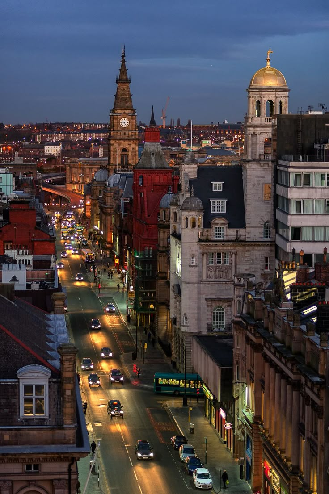
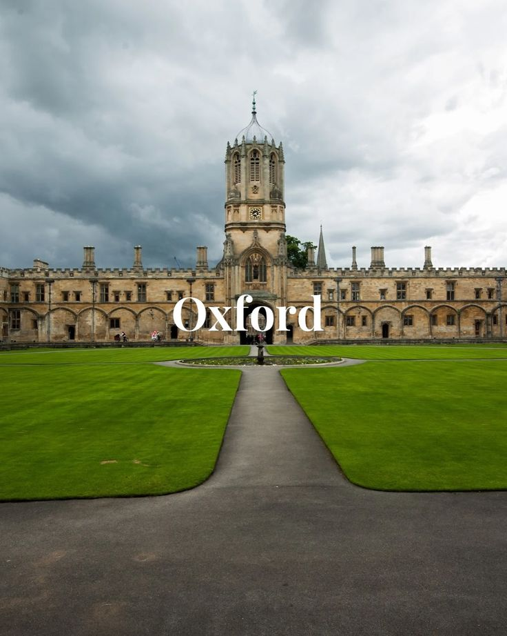
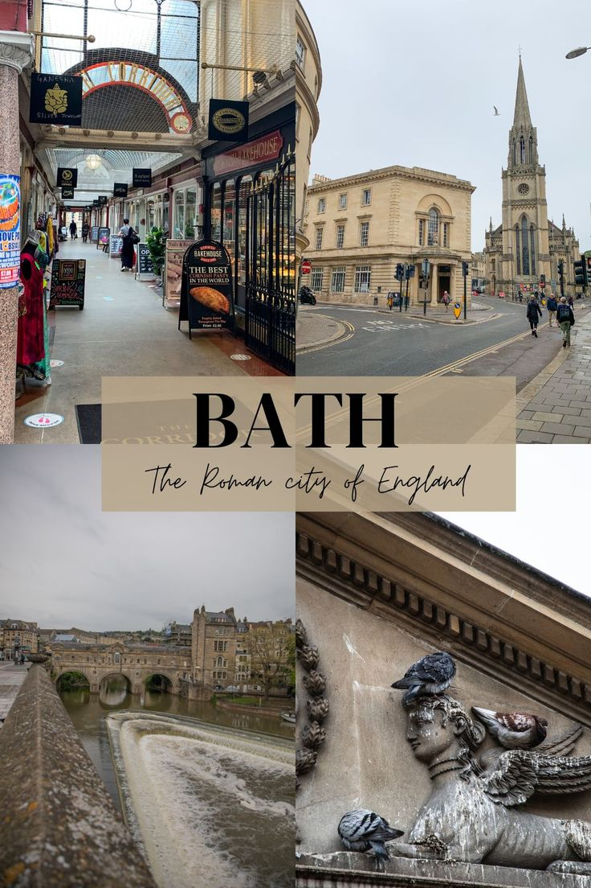
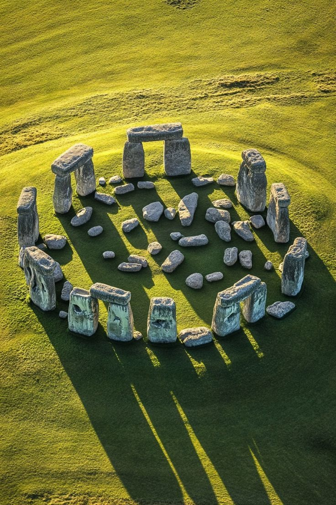
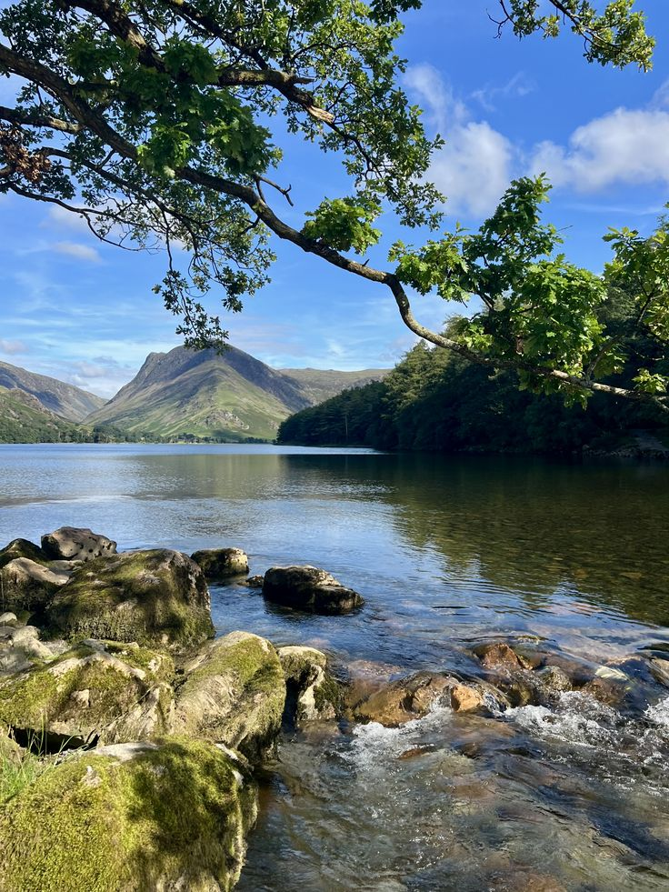

England is a country that is part of the United Kingdom, located in Europe. It is known for its rich history, from medieval castles and the monarchy to its role in shaping modern democracy and industry. The capital city, London, is a global center for finance, culture, and tourism. England has also made significant contributions to literature, science, and sports, with famous figures like William Shakespeare leaving a lasting legacy.
.jpg)
anchester is a major city in northwest England, It played a key role during the Industrial Revolution, becoming one of the world’s first industrialized cities. Today, Manchester is famous for music, football, and innovation. It is home to two globally recognized football clubs, Manchester United and Manchester City. The city also has a strong arts scene, with museums, galleries, and live music venues, especially in areas like the Northern Quarter. With a large student population and diverse communities, Manchester is known for its energetic and welcoming atmosphere.

Located on the River Mersey, Liverpool grew into a major port during the 18th and 19th centuries, playing an important role in global trade. Today, it is known worldwide as the birthplace of The Beatles, one of the most influential bands in history. The city is also home to the famous football club Liverpool F.C., whose stadium Anfield is a major attraction. With its historic waterfront, museums, music scene, and friendly atmosphere, Liverpool remains one of the UK’s most iconic and culturally rich cities.

The city is home to the University of Oxford, one of the oldest and most prestigious universities in the world, dating back to the 12th century. Often called the “City of Dreaming Spires” because of its stunning towers and historic buildings, Oxford has a rich academic and cultural heritage. Beyond education, it offers museums, libraries, and scenic rivers like the Thames, making it a popular destination for students and tourists alike.

The city of Bath is named after its ancient Roman baths, which were built around natural hot springs and remain one of the best-preserved Roman sites in the world. Bath became especially popular in the 18th century as a spa town, attracting visitors seeking relaxation and social life. Today, it is a UNESCO World Heritage Site, admired for landmarks like the Royal Crescent and Bath Abbey. With its rich history, stunning buildings, and charming atmosphere, Bath is one of England’s most beautiful and culturally significant cities.

Situated near Salisbury, Stonehenge dates back over 4,000 years and was built during the Neolithic period. The monument consists of a ring of massive standing stones, carefully arranged and aligned with the movements of the sun, suggesting it may have been used for religious or ceremonial purposes. Although its exact purpose remains a mystery, Stonehenge continues to attract millions of visitors each year and is recognized as a UNESCO World Heritage Site.

Located in Cumbria, the Lake District is the largest national park in England. It is known for its scenic lakes such as Windermere and its rugged hills, including Scafell Pike, the highest mountain in England. The area has inspired many writers and poets, especially William Wordsworth. Today, the Lake District is a UNESCO World Heritage Site, attracting visitors for hiking, boating, and peaceful countryside views.